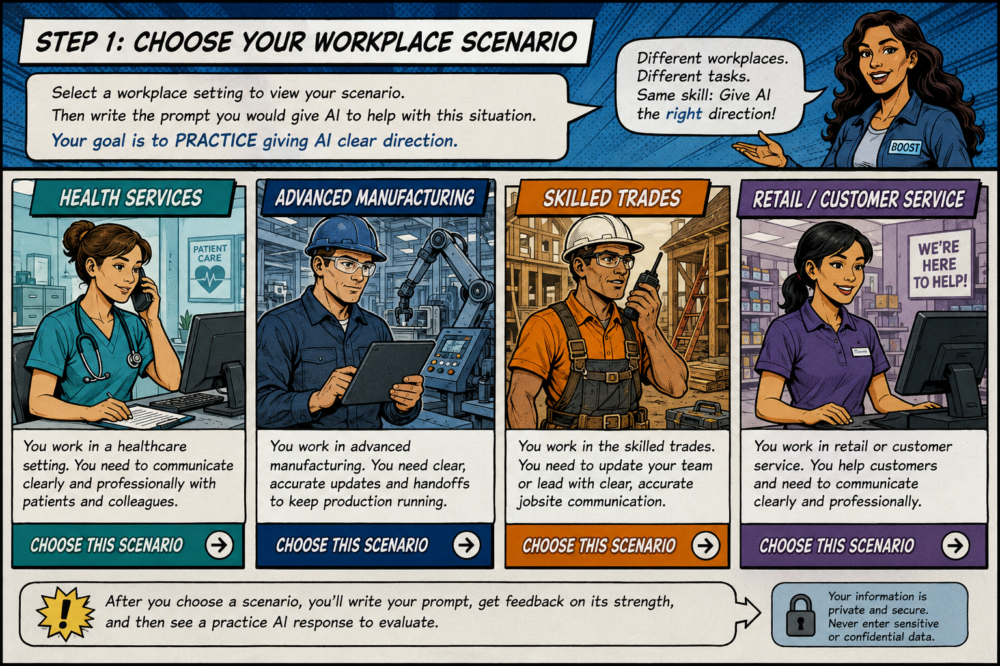

Learn it. See it. Try it. Use it. AI is changing how people find jobs and how work gets done. This module helps you practice using AI as a workplace tool—not simply getting answers from it.
Your goal: Build the confidence and judgment to give AI useful direction, protect information, evaluate what it produces, and decide what should actually be used.
1 • Learn It
AI is a tool. You are still the decision-maker.
🧠AI generatesIt can draft, summarize, organize, brainstorm, compare, and explain.
⚠️AI can be wrongConfident-looking answers can contain mistakes or invented information.
🔒Protect informationDon't enter private, confidential, or employer-protected information unless authorized.
👤You own the resultYou remain responsible for reviewing what you use or submit.
Quick check: Which task is AI best suited to help with?
2 • See It
Same AI. Better direction. Better result.
VAGUE:
“Help me write a résumé.”
AI can respond, but it knows almost nothing about the job, your experience, or what you need.
BETTER DIRECTION:
“I'm applying for a Medical Assistant position. I have two years of customer service experience and recently completed MA training. Draft three résumé bullets emphasizing transferable customer-service skills relevant to patient care. Don't invent experience.”
C — Context
NOT CLEAR
CLEARER
3 • Try It
AI Practice Lab
Choose a workplace. You write the prompt—not the answer. BOOST first evaluates how well you directed AI. Then you can compare your work with a strong example and review a sample AI response for the scenario.
1 • WRITECreate your own prompt.
2 • CHECKBOOST checks your prompt for C.L.E.A.R. elements.
3 • COMPARECompare with a strong prompt and sample AI response.

Select a workplace panel above. On phones, you can also use the buttons below.
Write the prompt you would give AI
🔒 Practice rule: These scenarios are fictional. In real life, stop before entering private, confidential, patient, customer, employee, or employer-protected information into an AI tool.
Prompt Strength: 0/5
Pilot note: This version does not send your typed prompt to a live AI model. After you check your prompt, you can load a strong example and then view the sample AI response designed for this scenario.
SAMPLE AI RESPONSE FOR THIS SCENARIO
Would you use this response as written?
4 • Use It
The AI Workplace Challenge
Round 1 — Build the Prompt
Round 2 — Check the AI
Actual notes: “Sensor fault occurred twice. Maintenance reset it. Production resumed. Monitor next shift.” AI says: “Overheating caused the failure and maintenance permanently fixed it.”
Round 3 — Make the Call
An AI-drafted customer follow-up is accurate and professional, but contains the customer's full account number that was pasted into the prompt.
Module 5 Results
AI LITERACY SNAPSHOT
AI READY
What you practiced
Badges earned
BOOST Takeaway
Remember: Give AI useful direction. Protect information. Check what it produces. Use human judgment before acting.
BOOST Audio Guide
Ready
High-quality narration is optional and participant-controlled.